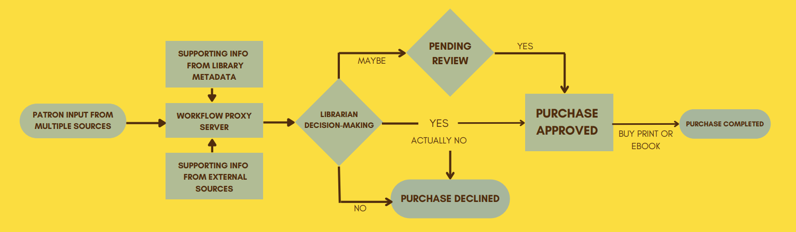
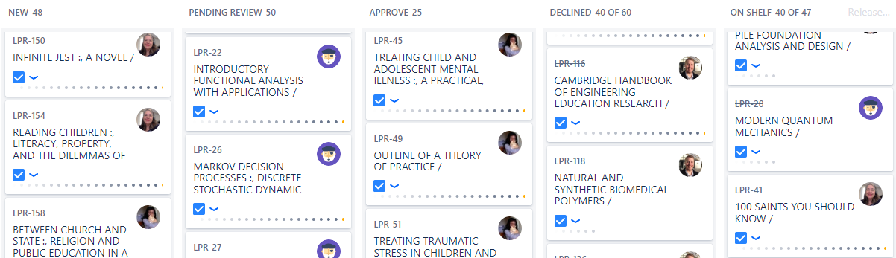

Easy Librarian Decision-Making
All purchase requests – from any source – are directed into a single, centralized web-based tool for
librarian
selectors to review and approve or deny the request. Each request is routed to a specific librarian based on
the
book’s subject classification.

Kanban board
Jira’s kanban boards make it easy for librarians to visualize and make decisions about the requests in their
queue.

Supporting Information
Each incoming request is automatically enriched with information to save staff time and support decision-making,
including:
Current data sources and other integrations include:
- Jira
- Restyaboard
- FOLIO
- OCLC WorldCat
- ILLiad
- ReShare
- ISBNdb
- LDAP
- Google Sheets
- Email reporting
Technical Information
Source code, configuration and technical documentation are available on GitHub.
Contact
Contact Maccabee Levine and Dan Huang at Lehigh University for additional information.